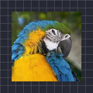

翻轉圖層

像翻轉卡片一樣在3D空間中翻轉圖層，背面可設為透明、圖片或顏色。
設定
| 設定項目 | 類型 | 範圍 | 預設值 |
|---|---|---|---|
| X軸旋轉 | 角度 | -3600° 至 3600° | 0° |
| Y軸旋轉 | 角度 | -3600° 至 3600° | 35° |
| Z軸旋轉 | 角度 | -3600° 至 3600° | 0° |
| 軸 | 角度 | -3600° 至 3600° | 0° |
| 背面 | 選項 | 透明、圖片、顏色 | 透明 |
| 背面顏色 | 顏色 | – | #FFFFFF |
| 位置 | 點（X, Y） | -5000 px 至 5000 px | 0 px, 0 px |
| 縮放 | 數字 | 0.05 至 10 | 1 |
| 透視 | 數字 | 0 至 1 | 0.5 |
| 明暗 | 數字 | 0 至 1 | 0.6 |
| 光線角度 | 角度 | -3600° 至 3600° | 135° |
| 光澤 | 數字 | 0 至 1 | 0.3 |